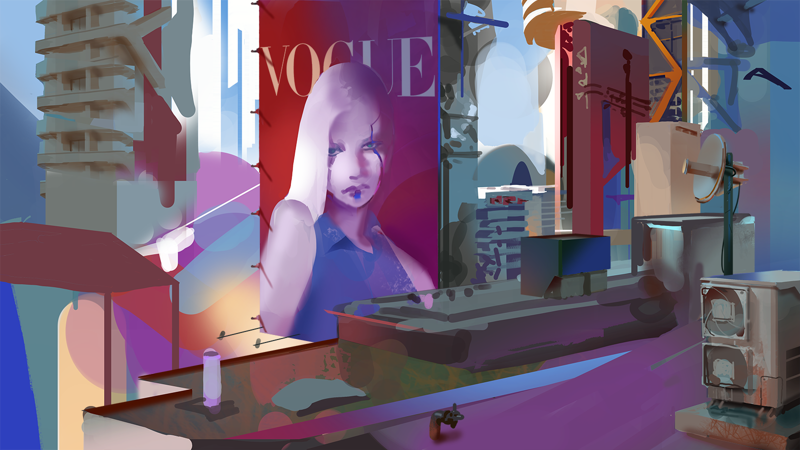
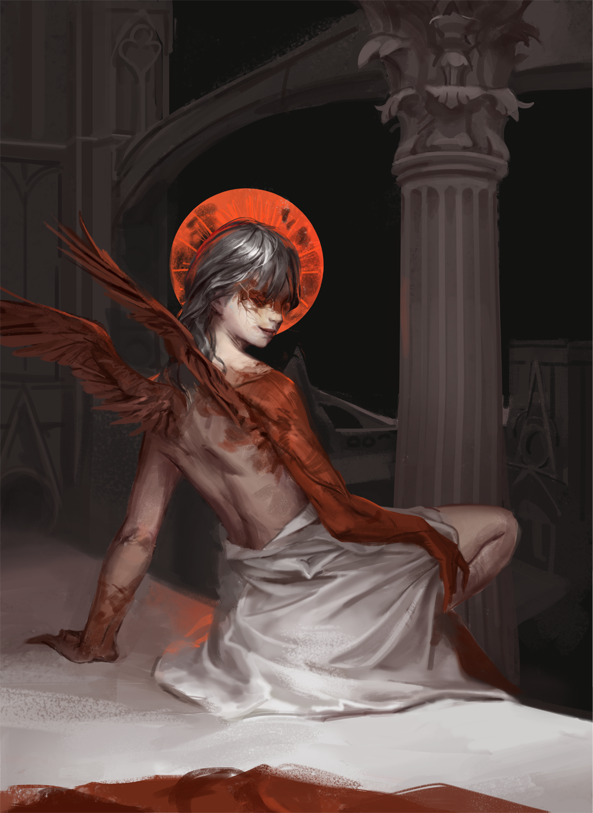
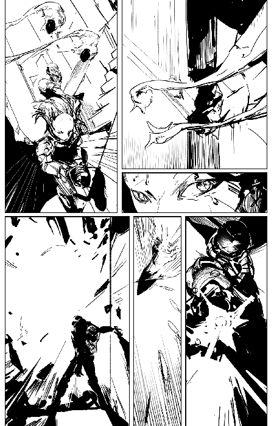
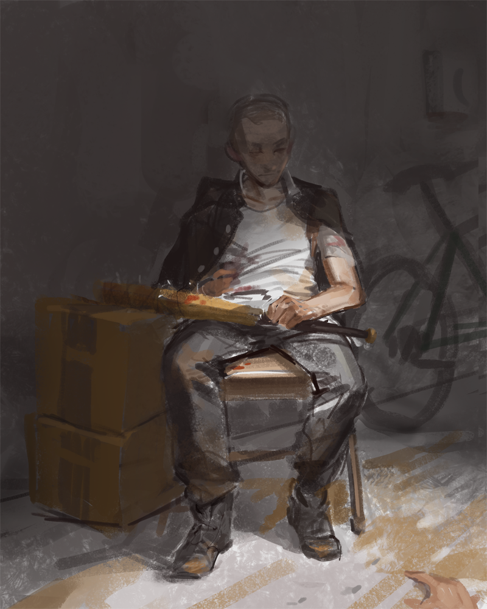
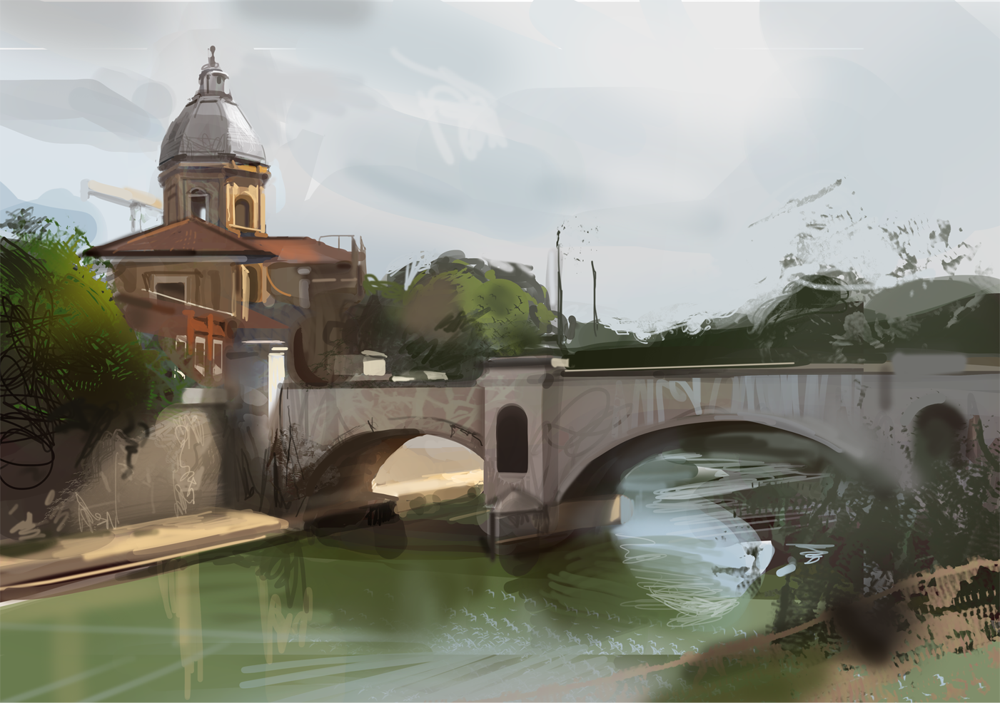
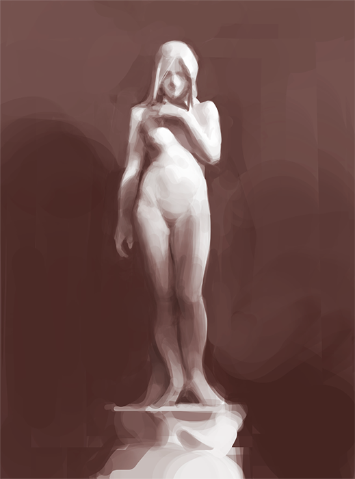

Naming stuff is hard so I don't. I've been painting since 2016 and have been taking some really long breaks recently.

aug. 2023 This was for the artstation challenge around that time. Sadly it did not quite end up finished. Also we were supposed to submit like 4 paintings total or something. I do not like to paint buildings, traditional painting is just not suited to hard graphic edges like that. It was an interesting work though, I think there's more color in this than the rest of this page combined.

feb. 2023

feb. 2022

may 2023 This was my part done for a community project to redraw the first chapter of Blame!. It was interesting trying a different style.

aug. 2022 a rare fanart

oct. 2021

sept. 2022

oct. 2022

june 2022

nov. 2022